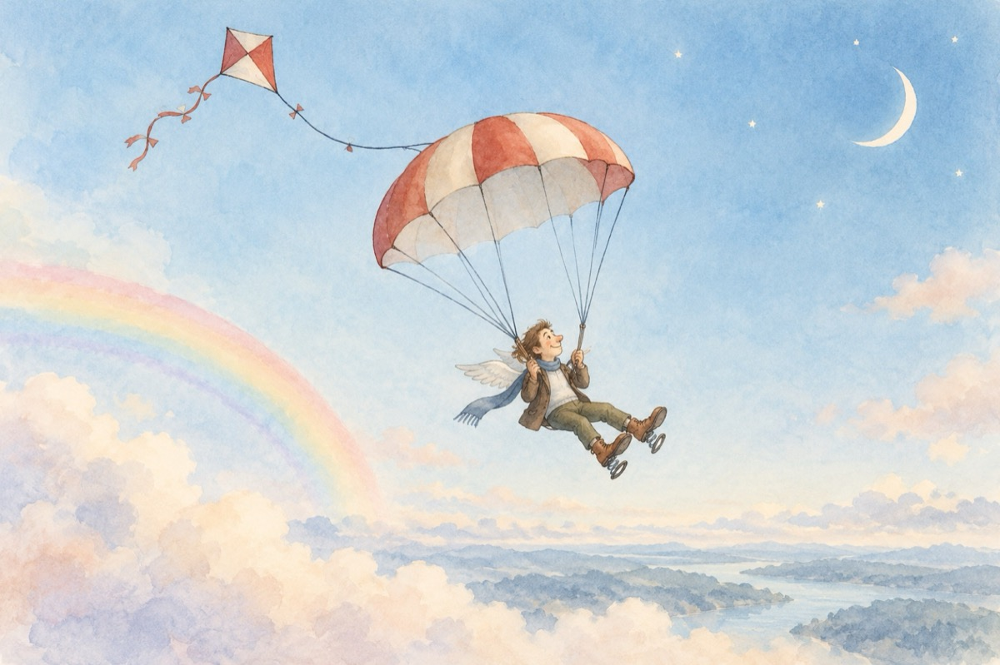

Criza
Tot umblând din criză-ncriză
Pământean de nota zece
Am luat în antrepriză
Experiențe cosmice.
Mă simt cumva motivat
Viitorul mi-i în față
Iată sunt un om bogat
Criza-n cosmos n-are viață.
NASA s-a restructurat
„Răsăritul” a apus
Pentru zbor – am echipat
Arcuri la bocanci mi-am pus!
La trotinetă motor
Și la zmeu o parașută
Vreau spre lună ca să zbor
Să-i văd fața nevăzută.
Aștept primul curcubeu
Arcul de triumf visat
Rampă de-unde mă lansez
Înspre cerul înstelat.
Să demonstrez omenirii
Că de criză nici nu-mi pasă
Și că-mi stă-n natura firii
Cosmosul să mi-l fac casă.
Să consum raze de soare
Și să beau rouă de stele
Să-mi pun două aripioare
Și să voiajez cu ele.
Voiajez voiajez
Printre stele navighez
mi-a dat un inel Saturn
coroană pe cap să-mi pun.
Marte el mi-a dat speranță
Venus dragoste eternă
Tot sistemul e-n balanță
Zmeul de un fir atârnă.
Eu plutesc către pământ
Parașuta s-a deschis
Plini de fericire sunt
Nu a fost decât un vis!
Vasile Groza